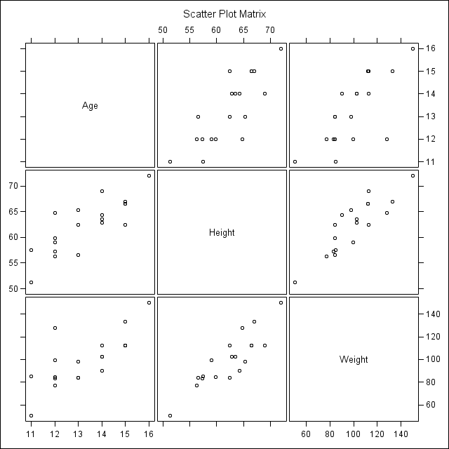

Getting started - SAS Engine for Rmarkdown
To get started using SAS as your statistical software/data processing “engine” take a look at the following article: http://www.ssc.wisc.edu/~hemken/SASworkshops/Markdown/SASmarkdown.html.
Also read up on the SASmarkdown package https://cran.r-project.org/web/packages/SASmarkdown/.
Display the current knitr engine
The following Rmarkdown chunk shows the commands to see what are your current knitr engine settings.
Be sure to put {r} after the 3 backticks ``` to create the R chunk.
```{r}
# see what the initial knitr engine settings are
knitr::opts_chunk$get()$engine
knitr::opts_chunk$get()$engine.path
knitr::opts_chunk$get()$engine.opts```
## [1] "R"## NULL## NULLSetup the SAS engine
To get started you need:
- Have SAS installed locally on your machine (i.e. you need a licensed copy)
- You need to know where on your local drive that your SAS executable is located. Mine is located at
C:\Program Files\SASHome\SASFoundation\9.4\sas.exe. - Install the
SASmarkdownpackage https://cran.r-project.org/web/packages/SASmarkdown/index.html. - Then setup your
knitroptions as follows (type these commands into an R chunk - see next section below):
saspath <- "C:/Program Files/SASHome/SASFoundation/9.4/sas.exe"
sasopts <- "-nosplash -linesize 75"
knitr::opts_chunk$set(engine="sashtml", engine.path=saspath,
engine.opts=sasopts, comment=NA)Change settings to use HTML output from SAS
NOTE: You will need to install the SASmarkdown package first. For this exercise we’re using engine="sashtml" which works well when knitting to HTML. However, this format will not work if you knit to PDF or DOC. This leverages the ODS output from SAS.
The R chunk below loads the SASmarkdown package, changes the knitr engine to "sashtml" and runs the knitr::opts_chunk$get() commands again to make sure that the engine has been switched from "R" to "sashtml".
```{r}
# load the SASmarkdown package
library(SASmarkdown)
# set up the options so that knit knows where you SAS executable is
# set the linesize to be easily readable on letter size paper, portrait
# and set the knir options using opts_chunk$set().
saspath <- "C:/Program Files/SASHome/SASFoundation/9.4/sas.exe"
sasopts <- "-nosplash -linesize 75"
knitr::opts_chunk$set(engine="sashtml", engine.path=saspath,
engine.opts=sasopts, comment=NA)
# run these commands to convince yourself that
# within this knitr session the engine changed.
knitr::opts_chunk$get()$engine
knitr::opts_chunk$get()$engine.path
knitr::opts_chunk$get()$engine.opts```
## [1] "sashtml"## [1] "C:/Program Files/SASHome/SASFoundation/9.4/sas.exe"## [1] "-nosplash -linesize 75"If you want to use SAS but make PDF or DOC files
If you want to knit to PDF or DOC, you should change the engine to engine="sas". This will NOT use ODS output from SAS.
These R chunk commands are provided for reference but not executed here.
saspath <- "C:/Program Files/SASHome/SASFoundation/9.4/sas.exe"
sasopts <- "-nosplash -linesize 75"
knitr::opts_chunk$set(engine="sas", engine.path=saspath,
engine.opts=sasopts, comment=NA)Try some SAS code
This code chunk below runs the PROC MEANS command from SAS using the built in dataset sashelp.class.
```{r}
proc means data=sashelp.class;
run;```
More SAS code
Here is another example of SAS code chunk using the PROC CORR commands to see correlations between the variables in the sashelp.class dataset and visualize the scatterplot matrix.
```{r}
proc corr data=sashelp.class plots=matrix;
run;```
| 3 Variables: | Age Height Weight |
|---|
| Simple Statistics | ||||||
|---|---|---|---|---|---|---|
| Variable | N | Mean | Std Dev | Sum | Minimum | Maximum |
| Age | 19 | 13.31579 | 1.49267 | 253.00000 | 11.00000 | 16.00000 |
| Height | 19 | 62.33684 | 5.12708 | 1184 | 51.30000 | 72.00000 |
| Weight | 19 | 100.02632 | 22.77393 | 1901 | 50.50000 | 150.00000 |
|
Pearson Correlation Coefficients, N = 19 Prob > |r| under H0: Rho=0 |
|||||||||
|---|---|---|---|---|---|---|---|---|---|
| Age | Height | Weight | |||||||
| Age |
|
|
|
||||||
| Height |
|
|
|
||||||
| Weight |
|
|
|
||||||

Reset engine to R
While this is great using SAS, if you want to switch back to using R within the same Rmarkdown document, within the same knitr session, you’ll need to tell knitr that you are switching engines.
To get this next chunk to run, you’ll need to reset the knitr engine within the chunk options directly and then use the command knitr::opts_chunk$set(engine="R", engine.path=NULL, engine.opts=NULL, comment=NA) to reset back to R.
Be sure to put {r, engine='R'} after the 3 backticks ``` to set this R chunk back to the R engine.
```{r, engine='R'}
# this chunk has the engine set back to `R`
# run a short bit of r code
# scatterplot of cars dataset
plot(cars)
# check the current engine
knitr::opts_chunk$get()$engine
# reset the engine globally (i.e. so it will work outside of
# this chunk so you don't have to keep typing engine=`R`)
knitr::opts_chunk$set(engine="R", engine.path=NULL,
engine.opts=NULL, comment=NA)
# confirm that this change was applied
knitr::opts_chunk$get()$engine
knitr::opts_chunk$get()$engine.path
knitr::opts_chunk$get()$engine.opts```

[1] "sashtml"[1] "R"NULLNULL…and here is another R chunk with no engine defined but the engine was switched back to R in the previous chunk.
```{r}
# this chunk didn't list the engine explicitly, so let's
# make sure the global change carried over into this chunk
knitr::opts_chunk$get()$engine
# and some more R code
# simple linear regression of distance by speed
# for cars dataset
summary(lm(dist ~ speed, data = cars))```
[1] "R"
Call:
lm(formula = dist ~ speed, data = cars)
Residuals:
Min 1Q Median 3Q Max
-29.069 -9.525 -2.272 9.215 43.201
Coefficients:
Estimate Std. Error t value Pr(>|t|)
(Intercept) -17.5791 6.7584 -2.601 0.0123 *
speed 3.9324 0.4155 9.464 1.49e-12 ***
---
Signif. codes: 0 '***' 0.001 '**' 0.01 '*' 0.05 '.' 0.1 ' ' 1
Residual standard error: 15.38 on 48 degrees of freedom
Multiple R-squared: 0.6511, Adjusted R-squared: 0.6438
F-statistic: 89.57 on 1 and 48 DF, p-value: 1.49e-12Good luck creating documents with Rmarkdown for SAS code and output.